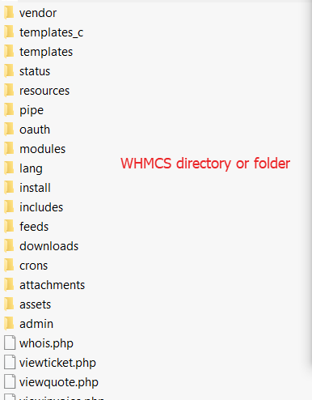
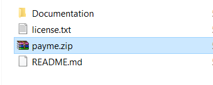

Login to your server via SSH using Putty
OR
Login to your server via FTP using WinSCP
OR
If you are using cPanel, DirectAdmin, Plesk or any other Control Panel like VestaPanel, WebAdmin, go to File Manager
Go to installation directory of WHMCS where you have already installed WHMCS on your server or hosting. It will contain the following folders.

Download the zip folder from your CodeCanyon Account. Open it and find payme.zip

Upload the payme.zip folder directly into your WHMCS from File Manager.
Extract the downloaded zip folder. If you find any file overwrite notice, accept it.
PayMeService WHMCS Plugin will automatically get installed successfully.
Login to your WHMCS
Go to Setup >> Payments >> Payment Gateways >> All Payment Gateways. You may check Configuring your first Payment Gateway.
Select Payme
Enter your Seller ID. If you don't have, you may get it from PayMe Service from your account settings area.
If you want to perform live payments, uncheck the test mode. For testing or sandbox mode, tick the test box.
Here you go...Now you can perform payments via PayMe successfully. Enjoy!
If you face any difficulty, you may contact us at:
Whatsapp: +923466257584
Wechat: +923041280395
Facebook: WebSoft